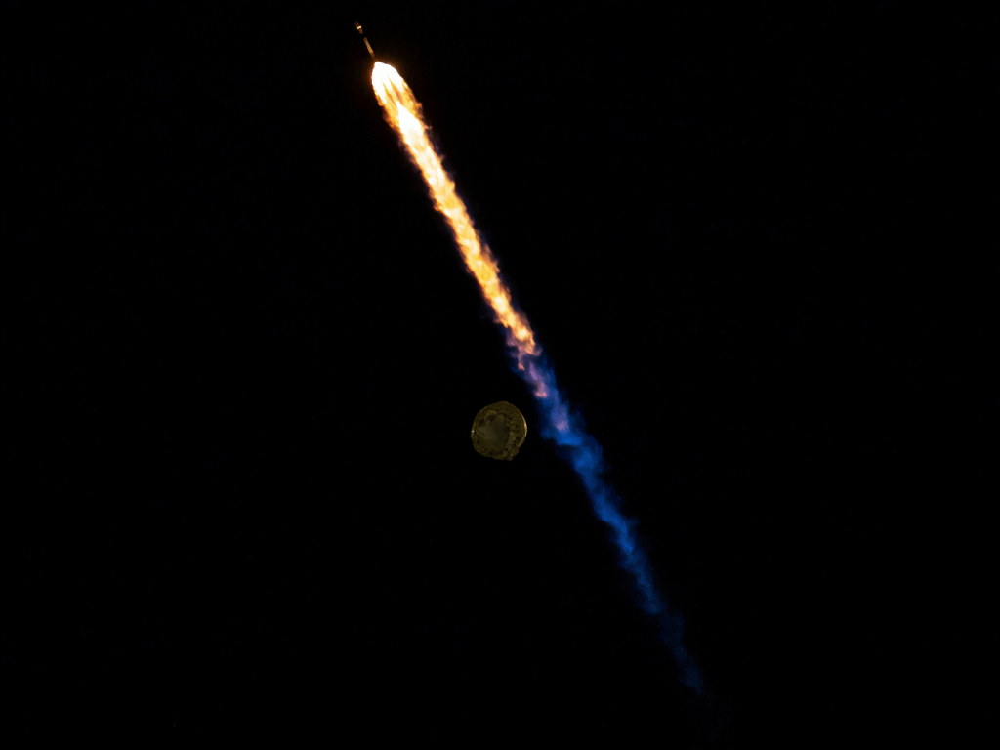
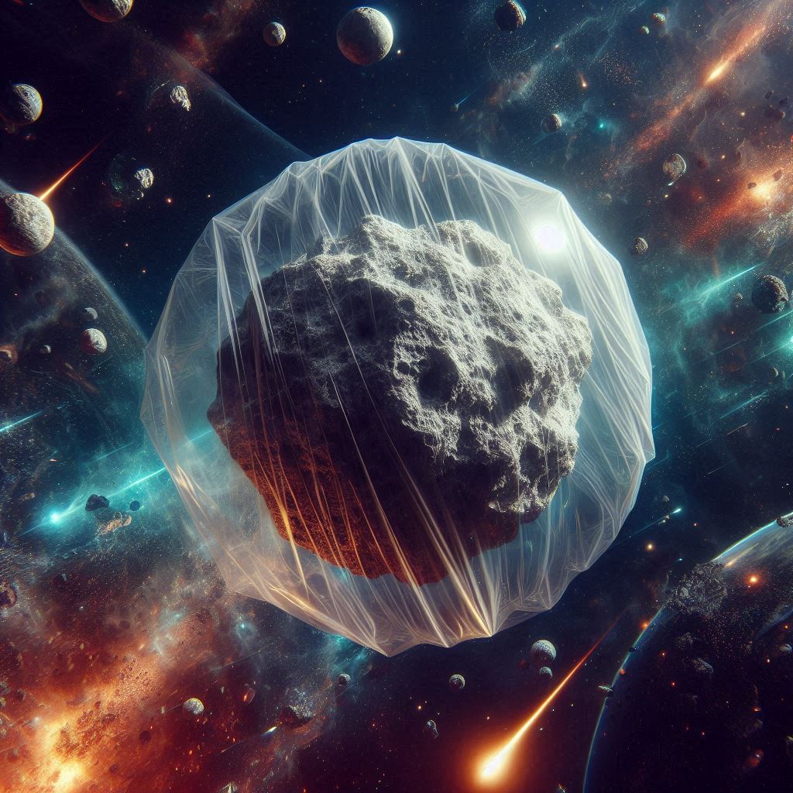
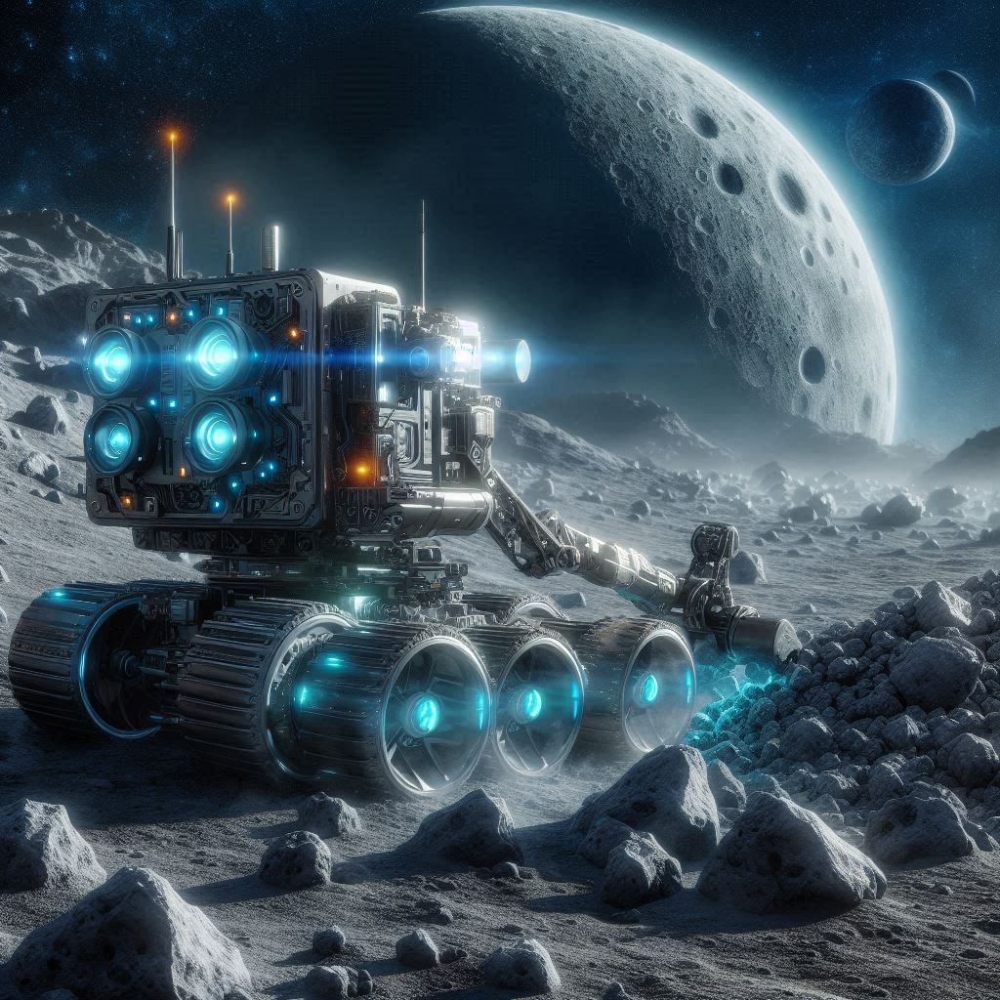

We live in the age of consumerism, where people constantly buy and dispose of goods. These are made of all sorts of things, from cheap plastic to precious metals, and everything in between. As well as this, global technological progress is rapidly increasing, and our industrial world demands vast amounts of materials, both for the products and technologies they produce and for the process of producing them. Yet there’s a problem here. All of these materials come from our Earth, which we are heavily mining for resources. This form of resource extraction is often done in a relatively unsustainable manner, and is hence environmentally taxing. A prime example of this is the deforestation that often results from mining. Furthermore, even if we have a good process of recycling our metals, there is still the question of how our current resource supplies will keep up with our increasing demand.
So what can we do? Well, it seems that asteroids are a great point of expansion which aligns well with our ambitions to expand our economy into space. There are two main benefits of mining asteroids over mining Earth; more resources available and minimal environmental drawbacks. Many asteroids come from the cores of early planetesimals that were torn apart before they could establish themselves, and because of this the metal contents of many asteroids is very high. For example, the asteroid 16 Psyche is believed to hold upwards of US$10,000 quintillion worth of gold – which is over 7 million times the amount of gold on Earth. So there is no doubt that asteroid mining holds the potential to meet any of our resource demands. Now regarding the latter benefit, unlike Earth, asteroids are essentially large lifeless rocks. So mining asteroids would not have any of the environmental drawbacks that it has on Earth, such as deforestation and disruption of wildlife. The only consideration we will have to take is, even though there are many asteroids, to make sure to keep sustainable mining practices ongoing so as to not deplete these resources and wreck this phenomenal opportunity. Besides the metallic resources, asteroids also promise to support our space economy in another key way.
A Space Refuel Station
There are three types of asteroids: C-type (carbonaceous chondrite), M-type (metallic, like those mentioned previously) and S-type (silicate minerals and metallic iron). C-type asteroids refer to asteroids rich in carbon, as well as clay and other minerals, these asteroids also often contain water. This water is the key resource here, as it can be extracted and split into hydrogen and oxygen. This can then be used as liquid oxygen and hydrogen to fuel spacecraft. Being able to refuel spacecraft from asteroids (either in the asteroid belt or moved closer towards us) would be awesome for space travel as a significant portion of a rocket's mass goes toward its fuel, and most of this fuel is used to escape from Earth’s gravity. So this would reduce the weight of the rocket when leaving Earth and would also open a doorway to space exploration into deeper space. So how will we actually mine these asteroids?

How the asteroid is mined
Unlike Earth, asteroids have very little gravity which is useful as there is little challenge in escaping the asteroid's gravity. Yet it also poses something of a challenge in that materials mined will float away unless contained. To fix this, an inflatable bag will be used in the area to be mined so that the mined material is contained to be collected. For the extraction of the materials, there are two main methods: optical mining and robotic collection. Optical mining involves focusing sunlight into the specific area to be mined, this would then evaporate part of the asteroid and the desired materials could then be collected from the inflatable bag. The other method involves using an automated mining robot which will essentially scoop material off the asteroid (somewhat similar to how we mine on Earth) and collect it. This could take a few different forms, such as tunnelling into the asteroid or scraping regolith off the surface. But, even with this seemingly great plan, there are some substantial challenges that arise.

The Challenges of Asteroid Mining
To get this technology to work, in outer space, there are a few hurdles to overcome. The mining technology, as shown previously, cannot be just a slightly changed version of our current mining techniques. As the asteroid belt is too far away from us to remotely control it, and the industry is not established enough to send humans, the whole system would have to be automated. This would involve the manoeuvres to get to the asteroid surface, deploying the inflatable bag, extracting the materials and managing the operation – all entirely automated. For example, both the hardware and automation system would have to be set up to accommodate for the asteroid’s microgravity. This would mean that this system would have to manage the fastening of mining gear to the surface and then the collection of mined materials (in a bag, like previously proposed).

Besides technological hurdles, there are also business and legislative challenges. As asteroid mining will happen commercially if it is to be done on a mass scale, it will be run by businesses. Yet asteroid mining (in the present) is a huge risk for businesses, as it requires significant investment of both time and resources. The development of the spacecraft and mining technologies would take a while to complete and once in space, trips (at least for a couple decades) to and from the asteroid belt will likely take from 6 to 10 years. Financially, the development and commercialisation of these technologies would likely require hundreds of millions of dollars. Of course, if it succeeded the returns would be enormous, but if it failed the loss would be no minor issue. Yet with the amount of metals in these asteroids, prices may be driven down, and there will need to be a system in place to support that. Furthermore, on the legislative side, there aren’t many troubles, but, particularly in the early stage, problems may arise concerning liability and jurisdiction, e.g. if there is damage done from space debris, etc.
So, is this the future?
I believe that we are close to, and may already have, the technology to mine asteroids, yet it may not be economically feasible. The technology required for asteroid mining is quite advanced, and expensive, so commercialising it in a viable way is not currently able to happen. For example, power consumption will be high. Not only will we need enough power for the mining systems, we will also need enough power to fuel the spacecraft to and from the asteroid. Unlike telescopes, this spacecraft will have to be both large and massive (especially on the return trip), and will hence require significant energy to power it. This energy would have to either be powered by solar panels, with both a large surface area and high efficiency, or a reactor, most likely nuclear (which has only been used twice, and only on satellites). Furthermore, the feasibility for businesses is also not yet there. Besides the previously mentioned investment needed, we do not yet have the infrastructure to support the amount of resources mined from asteroids immediately entering our economy. To conclude, asteroid mining is highly promising and will be enormously useful and influential in the future space economy, but is not yet economically viable. Nonetheless, as we continue to expand our space economy by improving spacecraft, fueling and infrastructure, asteroid mining will rise in feasibility and may one day become the backbone of our industrialised space economy.